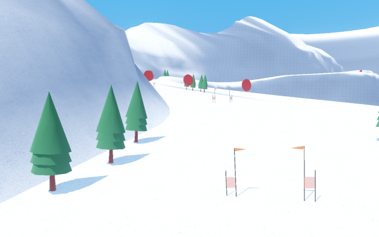
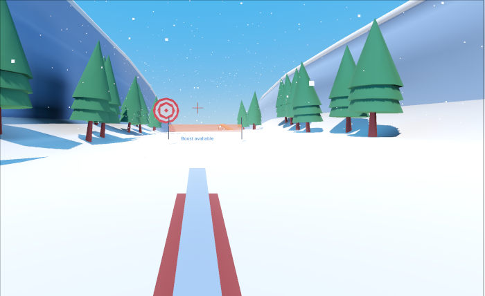
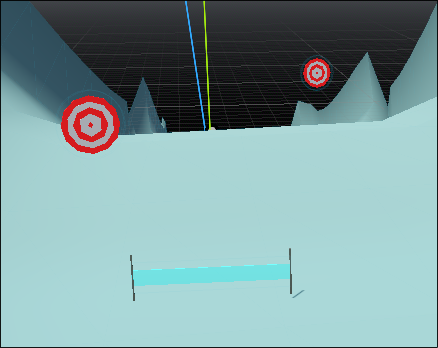

Ridiculous Biathlon

Description
A fast paced race to the button. Use each slalom gate to get speed boosts well hitting every shot as you speed to the bottom of each challenging slope.
Screenshots & Images



Play The Game
Feedback & Comments
"It looks like you made a web build but forgot to click the button to tell itch to serve it to people as the web build" - rBrink21
"Yeah, it suffers from a bug where the player infinitely spins. I have not solved this. The build is meant to be hidden" - IllogicalDesigns (Developer)
"I also fell into the trap of wiping a leaderboard :( also very sorry. This was a lot of fun. I was able to get some really good speed by just hitting the targets well. I really want to try the backward shooting to see how that plays :-p. Really great job." - FlyingStupid
"(Oh my god i think i wiped the first level's leaderboard i am so sorry D: i thought it only removed my current name, not everyone's D:) Aside from this i absolutely loved this !! The menus have an amazing feel to them, graphic style is clean and the gameplay is stellar ! Found out the rifle had a pushback so i had to try using an autoclicker to see if you could gain infinite speed by turning around and shooting fast, turns out you can !!! I think it might even be viable to do it without said autoclicker if you really hate your mouse ^^ (tried it won't recommend though, you'd need to click more than 20 times per second to even get past the speed boosts targets give you) (wanted to purge the score i got with the autoclicker from the leaderboard but ended up purging everyone's in the first level D: i'm so sorry) I loved it!!! Had tons of fun trying to break it (be it with an autoclicker or with colliding with walls to fly all over the place)" - Reqo
"Whoops I released it in Debug mode didn't I. Well the wipe leaderboard button is supposed to not be visible during normal releases. I think the firing backwards is hilarious. But still requires skill, so it should count." - IllogicalDesigns (Developer)
"skii skii skii pew pew pew yes yes yes :D nice entry!" - Vivikowski
"How did you do persistent scoring!? Very fun, I really hope my scores stick up there." - Flying Tugboat Studios
"I used the godot plugin called silent wolf. https://silentwolf.com/" - IllogicalDesigns (Developer)
"Wow, I really enjoyed it! Cranked gold for non-devs maps! Only had some performance issues, but removing global lightning for me solved them (actually with global lights and without - not much difference xd)" - darkeer
"Really nice! The main track has such a groovy bassline to it and I had a lot of fun with this! Controls are tight and solid, fun concept!" - jayv0
"Very fast paced, fps on steamdeck made it a bit hard to compete.." - jamie-pate
"I had so much fun with this one! Seriously impressive, controls felt smooth and fluid, fun concept, addictive, game looks and sounds great. Leaderboard and score tracking is great for a jam game too. Amazing job!" - VividEnigma
"Really cool entry, feels like you could get pretty good at this. Wish there were some levels with difficult jumps or turns" - dpolk
"Strengths: The gameplay loop is unique and feels fun. The concept fits the theme well and feels original. There’s a strong core idea that stands out from other entries. Weaknesses / Areas for Improvement: The controls were a bit hard to understand at first. I didn’t realize you need to hold forward to move, which made the early experience confusing." - IamWarrior
"Wow! This is REALLY fun. Hitting the targets to gain speed feels great. I really want to see one of those online fps sniper types play this and wreck it." - Wyatt
"A pretty neat take on the theme, I found out if you shoot fast enough you can get some crazy speeds going backwards." - FindingCheeko
"I will consider this a feature!" - IllogicalDesigns (Developer)